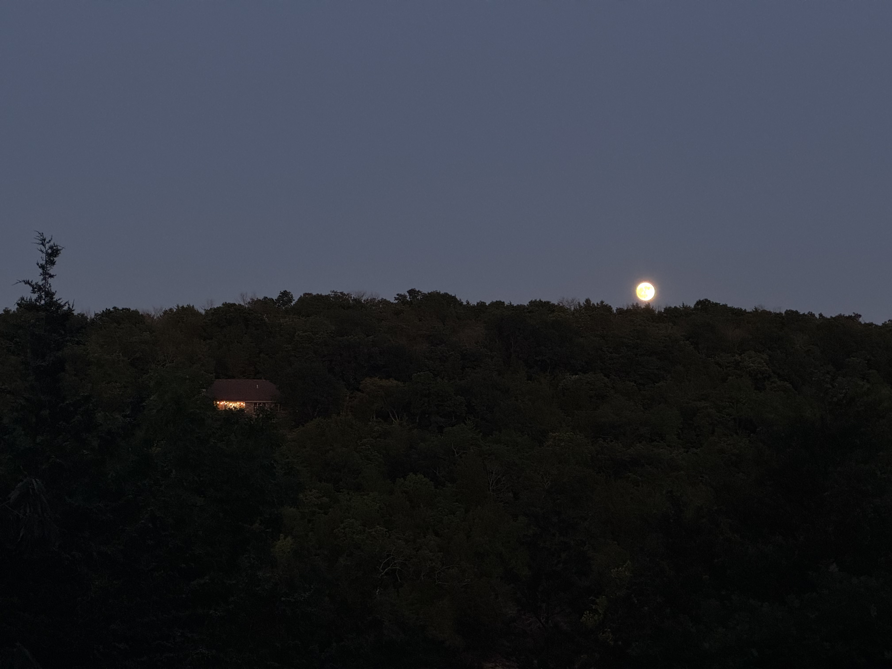

The dark
Suspended in the silence of an early morning
I have befriended the dark.
I feel its fragile stillness.
And traverse it quietly.

Suspended in the silence of an early morning
I have befriended the dark.
I feel its fragile stillness.
And traverse it quietly.
